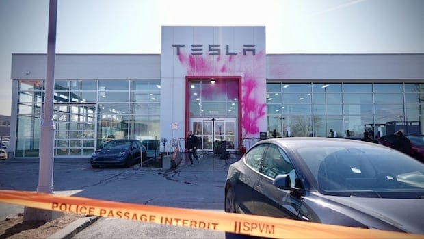

世界苦茶03月20日新闻 | 40条 | 特朗普与泽连斯基就停火通话

特朗普与泽连斯基就停火通话 | 胡锡进呼吁香港阻止李嘉诚 | 柯文哲违反政治献金法被罚 | 中国下调消费贷款利率到历史新低 | 特朗普公布肯尼迪遇刺文件
透明茶室
苦茶数据
美元兑人民币：7.23（昨日7.23，前日7.22）
美元兑日元：148.32（昨日149.51，前日149.63）
上证指数：3408（昨日3426，前日3429）
标普500指数：5675（昨日5614，前日5609）
比特币：85759（昨日83350，前日81315）
布伦特原油：71.22（昨日70.34，前日71.69）
中国新闻
• 胡锡进呼吁香港政府阻止李嘉诚出售港口 ：对于香港首富李嘉诚旗下的长江和记拟出售巴拿马运河港口等资产，中国官媒《环球时报》前总编辑胡锡进说，支持香港政府采取措施阻止这笔交易，并呼吁长江和记“不妨挺起腰杆，勇敢与美国的威胁进行周旋”。胡锡进星期二在微博发长文称，鉴于美国存在政治利用那些港口压中国海运的极大现实可能性，香港《大公报》连发三篇文章反对这笔交易，港府表示“任何交易须符合法律法规要求”，他认为合乎情理，而且他作为一名中国大陆媒体人，支持港府采取措施阻止这笔交易。他相信，这是大多数了解了情况的中国人的态度。他说：“我想劝长江和记的负责人，不妨挺起腰杆，勇敢与美国的威胁进行周旋。迄今为止，长江和记在未做任何抵制的情况下，就顺着美方的要求与贝莱德旗下的投资集团签署卖掉几乎所有境外港口的协议，太软了，实属不应该。”
• 中国外交部表示，日本应对历史负责，取信亚洲 ：中国外交部在记者会上回应有关中国在抗战胜利纪念日后，对日本的外交态度会更严厉的提问时说，日本只有本着对历史负责任的态度，才能够以实际行动取信亚洲邻国和国际社会。中国外交部发言人毛宁星期三主持例行记者会。日本共同社记者提问，今年是中国抗日战争胜利80周年，日方有分析称，在9月3日纪念日以后，中国政府对日本的外交态度将会更加严厉，对此怎么看？毛宁回应，今年是中国人民抗日战争暨世界反法西斯战争胜利80周年。她说，日本只有本着对历史负责任的态度，恪守正视和反省侵略历史的表态和承诺，坚持走和平发展道路，才能够以实际行动取信亚洲邻国和国际社会。
• 中国歼-36战机成都试飞，引发外界关注 ：网上流传视频显示，中国第六代战斗机“歼-36”时隔三个月后，星期一在四川成都再度试飞。香港《星岛日报》报道，据目击的网民表示，成都上空星期一再度出现歼-36战机，上午和下午各飞行了一次。和上次不同，这次没有“歼-20”伴飞，起落架收起，三个发动机同时开启。歼-36再次试飞也引起美国军事网站“战区”的关注。据扬子晚报军事评论员陈光文分析，在第二次试飞中，歼-36的开裂式机翼、三发、极小半径快速转弯等尖端技术更是让人眼前一亮，这进一步巩固了该机在全球空战领域的领先地位。
• 国家邮政局3月19日发稿，韵达快递部分加盟企业对协议客户安全管理存在重大漏洞，致涉诈骗宣传品进入寄递渠道，造成受害人重大财产损失。决定对韵达立案调查。
亚太印太新闻
• 台北地检署驳斥柯文哲案指控带风向 ：台湾媒体报道，检察官要求威京集团主席沈庆京“逼害”前民众党主席柯文哲，台北地检署则批评，不应通过媒体带风向。民众党对此表示，北检滥用视察进行不当讯问，已违正当法律程序，应说明侦讯有无笔录。风传媒星期二发表标题为《北检逼害柯文哲？沈庆京隔床室友听到检察官与他的极密谈话》的报道，其中提到一名自称是当时睡在沈庆京戒护病房隔壁床的病友爆料，指控北检检察官涉要沈庆京“逼害”柯文哲。北检星期二晚上回应称，检察官侦办案件均秉持客观中立态度，被告如有意见应在法院审判过程中理性具体主张，而非透过法庭外媒体放话带风向，“企图影响舆论及法院心证之形成，而斲伤司法公信力”。
• 柯文哲违反政治献金法，被罚374万新台币 ：台湾在野的民众党前主席柯文哲被裁定违反政治献金法，被罚款374万元新台币，并被没收收入5579万3888元。综合台湾《联合报》《自由时报》等报道，台湾检察院星期三宣布，监院廉政委员会当天审议通过有关2024年台湾选举中，民众党正副总统候选人柯文哲与吴欣盈涉及政治献金的查核报告，吴欣盈免罚，柯文哲裁定罚款374万元，签证会计师端木正移付惩戒。违法情形方面，监察院说，故意申报不实收支金额达6530万余元，其中包括募款演唱会售票，以及通过木可公司贩售竞选小物共4067万余元收入，故意匿未申报；另有虚报一笔收入及86笔无交易事实等虚报支出，总计2463万余元，违反政治献金法第21条第1项规定，依行政罚法第18条规定加重处罚，裁处罚款180万元，并没收匿未申报收入4067万余元。
• 民进党成立2026选举小组，潘孟安任召集人 ：距离台湾“九合一”地方选举还有一年多时间，台湾执政党民进党成立了2026选举先期策略小组，召集人是与总统赖清德交情深厚的总统府秘书长潘孟安。综合中时新闻网、风传媒、《上报》等报道，民进党中执会星期三通过成立2026选举先期策略小组，召集人为潘孟安。除了民进党立法院党团总召集人柯建铭，其余成员来自民进党各个派系，分别是“英系”的高雄市长陈其迈、“涌言会”的立委、中常委王定宇、“苏系”的立委、中常委张宏陆、“绿色友谊”的中执委林益邦、“正国会”的中常委陈茂松，以及“新系”的前立委段宜康。
科技新闻
• 浙江启动AI培训，提高干部人工智能素养 ：中国人工智能初创公司深度求索“大本营”浙江省，对全省干部进行为期四个月的AI专题培训，提升相关素养。据澎湃新闻报道，人工智能通识及应用网络专题培训星期二晚在浙江省委党校正式开班。中共浙江省委副书记、组织部部长、省委党校校长王成作开班动员。开班第一课由中国工程院院士、之江实验室主任、阿里云创始人王坚讲授，他以“从DeepSeek看全球人工智能发展趋势”为题，分析全球人工智能的发展趋势、行业应用和产业生态。
• 台积电否认与英特尔合作，称两者难兼容 ：台湾晶片代工龙头台积电与美国半导体巨头英特尔合作的传闻不断，台积电董事刘镜清星期三明确表示台积电董事会从来没有讨论过这个议题，他还形容台积电和英特尔像是柴油跟汽油，很难混在一起烧，借此否认两家公司合作的可能性。
财经新闻
• 美元走强，避险情绪推高金价新高 ：在市场等待美国联邦储备局公布利率决议之际，美元星期三走强，避险情绪升温也推动黄金价格创下历史新高。截至晚上8时26分，美元兑一篮子主要货币上涨0.2%，报103.55。受日本央行维持利率不变影响，日元兑美元波动剧烈，美元兑日元上涨0.3%，报149.805。
• 土耳其政局不稳，里拉兑美元暴跌14.5% ：在土耳其总统埃尔多安主要政治对手、伊斯坦布尔市长伊玛姆奥卢被拘留后，土耳其政局不稳，当地金融市场星期三剧烈震荡，里拉兑美元暴跌14.5%。据了解，为稳定汇率，土耳其央行当天通过多家银行抛售近100亿美元外汇，创下单日干预纪录。据三位当地银行业人士透露，央行虽未直接入市，但通过公共银行以常规方式出售外汇。
• 中国去年召回1123万辆汽车，新能源车占四成 ：中国官方数据显示，去年共实施汽车召回233次，涉及车辆1123.7万辆，同比增67%，其中新能源汽车占全年召回总数的四成。综合央视新闻和界面新闻报道，中国市场监管总局星期二发布2024年全国产品召回情况的通告显示，全年共实施汽车召回233次，涉及车辆1123.7万辆，分别较上年增长8.9%和67%。这也是时隔五年，汽车召回数量再次超过千万辆。上一次是2018年的1251.3万辆，巅峰值则是2017年的超2000万辆。其中，实施新能源汽车召回89次，涉及车辆449.1万辆，同比增长180.1%。
• 小米扩大北京第二家电动车工厂规模 ：中国电子产品制造商小米，据报正在扩大计划中的北京第二家电动车工厂的规模。彭博社星期三引述知情人士报道上述消息。小米去年开始在北京亦庄区一块占地53公顷的土地上，建造第二家工厂。小米以8.42亿人民币购买了这块土地。该工厂定于年中开始生产。这名知情人士说，小米工厂的扩建，将纳入相邻的一块约52公顷的土地。
• 美银警告，中国股市反弹或面临回调 ：美国银行证券策略师警告，鉴于当前市场与2015年股市大起大落的周期存在相似之处，中国股市的反弹可能很快面临“一次较为显著的回调”。彭博社星期三报道，美银证券策略师吴文妮在星期一发布报告中指出，恒生中国企业指数和MSCI中国指数自1月中旬低点以来均已上涨至少30%，这一涨幅与2015年市场暴跌前的涨势相似。2015年5月，恒生中国企业指数达到高点后大幅下跌，至2016年2月累计跌幅近50%，至今仍未恢复至当时水平。报告指出，当前市场周期与10年前在经济再平衡和政策周期方面存在诸多相似之处，“尽管如此，由市盈率扩张所推动的反弹可能会变得脆弱”。
• 摩根士丹利将裁员2000人，削减成本 ：摩根士丹利（计划在今年3月裁退大约2000人，这是摩根士丹利自首席执行官皮克上任以来首次大裁员。彭博社引述知情人士说，除了大约1万5000名财务顾问，每个部门都会受到裁员行动影响。这家拥有约8万名员工的银行是在近期的市场波动前确定裁员计划。银行管理层希望在尽量减少人员流失的情况下控制成本。位于纽约的摩根士丹利总部发言人对彭博社的询问表示不予置评。
• 中国玉米进口放缓，年度采购目标恐难实现 ：中国玉米进口速度放缓，表明即便北京下调年度采购预测目标，也可能难以实现。彭博社引述星期二公布的海关数据，今年1月至2月，中国仅进口了18万吨玉米，使得自去年10月起的2024／25年度进口总量达到107万吨。上一次玉米进口如此低迷是在2017／18年度，当时前五个月的进口量仅为103万吨，全年进口达350万吨。中国农业农村部对本年度玉米进口量预测从此前1300万吨大幅下调至900万吨，这不到上一年度的一半。
• 西门子全球裁员6000人，自动化业务受冲击 ：科技行业裁员趋势延烧，这次轮到西门子计划在全球裁员6000人左右。本轮将裁撤的员工多数来自工厂自动化业务，这个业务部门正面临需求疲软。彭博社报道，西门子星期二）表示，2027财年底将裁减数码业务部门约5600名职员，其中有2600人在德国办公。至于电动车充电技术业务，今年会先裁退450人左右。西门子的自动化业务聘有6万8000名雇员，受中国市场需求持续低迷所累，公司此前于2024年曾暗示有意裁员。总裁博乐仁今年2月刚说，自动化业务有复苏迹象，时隔一个月便传出裁员。
• 中国福建拟投资160万亿印尼盾于印尼经济区 ：印度尼西亚首席经济部长艾尔朗加说，中国福建省政府计划向印尼中爪哇省的经济特区投资16万亿印尼盾。路透社报道，艾尔朗加星期二在一段视频声明中说，福建省政府计划向中爪哇省巴塘经济特区投资16万亿印尼盾，印尼总统普拉博沃与中国国家主席习近平就这项投资计划进行讨论。艾尔朗加没有透露更多细节，但表示普拉博沃计划于星期四访问巴塘经济特区。 （翻评：基本是640亿元。）
• 中国银行大幅下调消费贷款利率，刺激经济 ：中国银行大幅下调消费贷款利率至历史新低，以应对美国总统特朗普加征关税，同时提振经济增长。彭博社星期三报道，在金融中心上海以及重要科技中心杭州等较富裕地区，银行间正展开价格战。根据在线广告显示，贷款年利率最低已降至2.58%，以鼓励消费者餐饮消费和购物。而在大约两年前，消费贷款利率最高曾达10%。北京方面希望通过刺激消费、提振内需，推动长期低迷的经济减少对贸易和出口的依赖。
• 德意志银行调查显示，中国消费者信心明显回升 ：德意志银行的一项调查显示，中国消费者情绪较去年大有改善。彭博社报道，根据德意志银行星期二发布的报告，本季度接受调查的受访者中，约有54%表示他们感觉自己的财务状况比一年前更好，这一比例高于2024年的平均值44%。调查结果还显示，预计未来一年收入增加的受访者比例升至60%，为连续第二个季度上升。这份乐观的调查结果表明，中国提振家庭信心和消费的行动正取得越来越多成果。不过，情绪的转变并不意味着人们对房地产市场更加乐观，将房地产波动作为削减支出原因的受访者比例，从之前的60%上升至63%。
• 印尼股市大跌7.1%，创10年最大跌幅 ：印度尼西亚股市星期二大跌，创下10多年来最大跌幅，触发自冠病疫情暴发以来的首次交易暂停。市场分析师称，本次股市大跌源于投资者对印尼经济和消费支出疲软的担忧。财长慕燕妮将辞职的传言也造成一定影响。雅加达综合指数一度下跌7.1%，为2011年9月以来的最大盘中跌幅。数据中心运营商DCI Indonesia和印尼人民银行对股指拖累最大，前者跌幅达20%。
俄乌战争
• 特朗普与泽连斯基3月19日通电话： 特朗普介绍了他与普京的通话情况。泽连斯基同意停止袭击能源等基础设施，实施部分停火。泽连斯基希望美国增加“爱国者”导弹系统，特朗普同意同乌克兰合作在欧洲等地寻找可用资源。特朗普提出美国可帮助运营乌发电站甚至拥有其所有权。通话还提及如何监控停火进程，以及谈判团队需要解决的技术问题。两人通话前，泽连斯基指责普京的承诺与现实不符。普京宣布停止袭击乌能源设施，但当晚俄无人机仍对乌方能源设施发动了攻击。俄罗斯国防部表示，接到停止袭击的命令后，俄军自行摧毁了在乌境内的7架无人机。俄罗斯指责乌军袭击了俄南部克拉斯诺达尔边疆区一处能源基础设施。关于未来谈判，泽连斯基在通话前表态，领土割让将成为难点问题，承认乌被占领土属于俄罗斯是一条“红线”，乌方不会同意。俄罗斯与乌克兰19日各向对方移交了175名被俘人员。俄方还额外向乌方移交了22名需紧急救治的乌军重伤员。
• 英首相欢迎美俄停火进展，强调乌克兰和平 ：英国首相斯塔默欢迎美俄领导人为俄乌停火所取得的进展，同时强调这个进程必须为乌克兰带来公正和持久的和平。路透社报道，斯塔默星期二与乌克兰总统泽连斯基通电话，讨论美国总统特朗普与俄罗斯总统普京的谈判进展。普京同意暂时停止对乌克兰能源设施的攻击，但拒绝30天临时停火方案。唐宁街的声明说，斯塔默对美俄领导人在乌克兰停火谈判方面取得的进展表示欢迎，并强调：“这一进程必须为乌克兰带来公正和持久的和平。我们会与乌克兰站在一起，直到确保俄罗斯永远不会再发动非法入侵。”
• 普京提议俄美冰球赛，特朗普支持 ：俄罗斯总统普京提议俄美运动员举行冰球比赛，美国总统特朗普支持这个想法。路透社报道，普京星期二与特朗普通话时提议在俄罗斯和美国举办冰球比赛，由北美冰球职业联赛，和大陆冰球联赛的职业球员参赛。北美冰球职业联赛又称国家冰球联盟，是一个由北美冰球队伍组成的职业运动联盟。大陆冰球联赛前身为俄罗斯冰球超级联赛，是公认的欧洲和亚洲地区最顶级职业冰球联盟。这两个联赛并列为世界最顶级的冰球联赛。
• 俄乌停火谈判3月23日在沙特继续举行 ：关于俄罗斯与乌克兰停火协议的谈判，定于星期天继续在沙特阿拉伯举行。法新社报道，美国特使威特科夫星期二接受福克斯新闻采访时说，俄乌停火协议的谈判计划于星期天在沙特城市吉达举行，美国驻沙特代表团由国务卿鲁比奥和国家安全顾问沃尔兹率领。不过，威特科夫并未说明参与谈判的人员。
• 特朗普警惕中俄关系密切，计划改善美中俄关系 ：美国总统特朗普对中国和俄罗斯的关系变得更加密切表示警惕，并计划与中俄改善关系。据彭博社星期三报道，特朗普在与俄罗斯总统普京结束通话后不久接受福克斯新闻采访时说，“学历史，我就学过且通读过，你学到的第一件事，就是你不希望俄罗斯和中国走到一起”。在此次通话中，普京同意暂停对乌克兰能源设施的袭击30天，但拒绝临时全面停火方案，除非西方停止对乌克兰的所有军事援助。
• 欧盟批普京拒绝停火，强调俄无意让步 ：欧盟外交政策负责人卡拉斯星期三说，普京与特朗普的通话表明，俄罗斯无意在乌克兰问题上做出让步，并坚称克里姆林宫要求其他国家停止向基辅提供武器是不能接受的。法新社报道，卡拉斯说：“如果你读过通话文本，就会明白俄罗斯实际上并不想做出任何让步。”普京星期二在与特朗普的通话中同意停止攻击乌克兰能源设施，但拒绝全面停火，除非西方停止对基辅的所有军事援助。
• 克宫表示，普京与特朗普关系良好，盼恢复美俄关系 ：克里姆林宫星期三说，普京和特朗普的关系良好，双方决心逐步恢复严重受损的美俄关系。路透社报道，克里姆林宫发言人佩斯科夫说：“我可以非常有信心地说，普京总统和特朗普总统彼此了解，相互信任，并打算逐步努力实现俄美关系正常化。”他说，两国之间一直设有直通电话和视频通话的沟通渠道，但在拜登执政期间几乎没有得到使用。他说，普京希望两国领导人能够更频繁地进行沟通。
• 普京希望特朗普承认乌东四州归俄 ：据俄罗斯《生意人报》报道，普京希望特朗普正式承认莫斯科占领的乌克兰东部四个州以及克里米亚属于俄罗斯。《生意人报》引述星期二`与普京一起参加私人商务活动的匿名消息人士的话称，普京希望美国正式承认卢甘斯克、顿涅茨克、扎波罗热和赫尔松四个地区以及克里米亚是俄罗斯的一部分。尽管俄罗斯在战场上不断前进，但并未完全控制这四个地区中的任何一个。
• 德国计划今年向乌克兰提供30亿欧元军援 ：路透社星期三看到的一份德国财政部文件显示，德国即将离任的政府同意，在今年向乌克兰提供额外30亿欧元的军事援助。路透社也报道，根据财政部提交给议会预算委员会的一份报告，财政部长库基斯告知议会预算委员会，已被授权可以额外提供资金。在信中，财政部同意今年额外支出25亿4700万欧元。加上其他金额，包括欧洲和平基金的偿还款，德国将提供30亿欧元。2026年至2029年，德国计划批准向乌克兰提供82亿5200万欧元的军事援助，预计总额将超过110亿欧元。
其他新闻
• 以军加沙行动升级，坦克进入内察里姆走廊 ：以色列地面部队已在加沙中部和南部开展行动，以建立部分缓冲区。以色列坦克已进入连接加沙南北的内察里姆走廊。消息人士称，目前开展的仍是有限行动，但不保证未来是否发生更广泛的入侵。
• 内坦亚胡称加沙袭击只是开始，将持续战斗 ：以色列总理内坦亚胡说，对加沙的大规模夜间袭击只是开始，未来与哈马斯的谈判只能在战火中进行。法新社报道，以色列星期二对加沙地带发动自1月与哈马斯暂时停火以来的最猛烈空袭，造成加沙400多人死亡。内坦亚胡当晚在一段视频声明中说：“哈马斯在过去24小时内已经感受到我们的实力。我想向你们以及他们保证，这仅仅是个开始。”内坦亚胡表明：“从现在开始，谈判只能在战火中进行。军事压力对于释放更多人质至关重要。”
• 土耳其警方突袭伊斯坦布尔市长住所，拘留反对派 ：土耳其警方突袭伊斯坦布尔市长伊马姆奥卢的住所，并将他拘留。伊马姆奥卢是总统埃尔多安的主要政治对手，原定于本周末被他的政党提名为总统候选人。综合法新社和彭博社报道，土耳其警方星期三突袭伊马姆奥卢的住所后将他拘留。他当时在社媒平台X发布一段视频，声称“数百名警察来到我家门口，我把自己托付给人民”。他在视频里说：“警察正在搜查我家，敲我的门……我相信我的国家。”
• 冯德莱恩呼吁欧洲五年内重建军力 ：欧盟委员会主席冯德莱恩说，面对俄罗斯军事威胁以及可能失去美国的安全保护，欧洲必须重新武装起来，在五年内建立“可靠”的威慑力量。冯德莱恩星期二在丹麦皇家军事学院的结业礼上致辞时说：“到了2030年，欧洲必须展现强大的防御态势……欧洲若要避免战争，就必须为战争做好准备。”美国总统特朗普一再向俄罗斯示好，并表示美国将退出它在欧洲的传统安全角色，促使欧洲武装呼声四起。欧盟本月初提出“重新武装欧洲”计划，拟调动8000亿欧元打造“一个安全而有韧性的欧洲”。
• 联合国称，去年气候灾害流离失所人数创新高 ：联合国说，去年有数十万人逃离气候灾害，写历史新高，凸显建立覆盖全球预警系统的迫切需求。法新社报道，联合国世界气象组织星期发布的《全球气候状况》年度报告指出，根据国际流离失所监测中心的数据，2024年逃离气候灾害的人数写下历史新高；较贫穷国家受到飓风、干旱、野火和其他气候灾害的严重影响，例如在莫桑比克，约有10万人因气旋“奇多”而流离失所。然而，富裕国家也未能幸免。报告称，西班牙瓦伦西亚发生洪水，造成224人死亡，加拿大和美国也发生毁灭性的火灾，迫使30多万人逃离家园，寻找安全的栖身之地。
• 特朗普公布肯尼迪遇刺调查文件，透明度提升 ：美国总统特朗普兑现承诺，公开前总统约翰·肯尼迪遇刺案的调查文件。美国国家情报局局长加巴德说，特朗普将美国透明度提升到新高度。肯尼迪于1963年遇害。路透社报道，特朗普政府星期二在国家档案馆网站上公布本案相关材料。司法部律师花费数小时仔细确认来源，公开的电子版文件预计超过8万份。路透社看到的星期一晚间电子邮件显示，为了遵守特朗普公开文件的指示，司法部命令处理国家安全事务的一些律师，紧急审查当年刺杀案的记录。
• 美国助产士涉非法堕胎，被得州逮捕 ：美国得克萨斯州一名助产士被指提供非法堕胎服务，成为美国南部几乎全面禁止堕胎的州内，首名因此被捕者。得克萨斯州总检察长帕克斯顿星期一发声明说，48岁的罗哈斯涉嫌在休斯顿地区非法经营三家诊所，以及提供非法堕胎服务，她将被提控非法为人堕胎和无证行医。非法为人堕胎属于二级重罪。声明称，罗哈斯的诊所非法雇用的员工谎称是持证医疗专业人员。“罗哈斯涉嫌在诊所内为人非法堕胎，违反得州《生命保护法案》。”
• 特朗普解雇两名联邦贸易委员，引发争议 ：美国总统特朗普解雇联邦贸易委员会的两名民主党委员，引发民主党参议员和反垄断组织的强烈批评。路透社早前报道这个消息后，白宫官员星期二证实，特朗普解雇联邦贸易委员会民主党委员斯劳特和贝多亚，但并未发表更多评论。民主党参议员和反垄断组织担心，此举是为了消除联邦贸易委员会内部对与大公司潜在优惠交易的审查。
• 比利时检方起诉五人，涉欧洲议会腐败案 ：比利时检察官星期二称，已对欧洲议会腐败案中的五名涉案人员提出指控，该腐败案据称与华为有关。综合路透社和法新社报道，这五人在上周被拘留。其中四人现已被捕，并被指控贪污和参与犯罪组织，另一人面临洗钱指控，获准有条件释放。检察官没有透露涉案人员的姓名，也没有提供可识别他们身份的信息。
• 七个欧盟国家支持捷克资助自由欧洲电台的计划： 据《政治报》3 月 18 日援引外交消息人士的话报道，七个欧盟国家支持捷克的一项倡议，即在美国削减对自由欧洲电台/自由电台的支持后，该组织接管了该电台的资金。此前，自由欧洲电台/自由电台总裁兼首席执行官斯蒂芬·卡普斯 宣布，该媒体组织的联邦拨款协议已被取消，该协议此前曾为其全球业务提供资金。报道称，德国和几个北欧及波罗的海国家都支持捷克的提议，他们认为自由欧洲电台／自由电台是“民主权利缺失或受到威胁的地方的重要信息来源”。